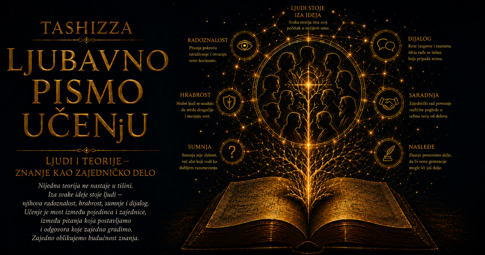

Ljubavno pismo učenju

Čovekova potreba da razume samoga sebe pripada najdubljim oblicima radoznalosti. Posmatramo sopstvene odluke, odnose, strahove, navike i čežnje, pokušavajući da u njihovoj raznolikosti pronađemo red koji će nam pomoći da živimo svesnije. Iz te potrebe nastaju teorije: pažljivo oblikovane misaone mape koje izdvajaju određene pravilnosti, daju im ime i omogućavaju nam da ono što smo ranije samo osećali počnemo jasnije da sagledavamo, proveravamo i menjamo.
Četiri ideje koje smo upoznali u prethodnim poglavljima prilaze čoveku iz različitih pravaca. Abraham Maslov usmerava pogled prema potrebama koje našoj energiji daju smer; Ivan Pavlov otkriva kako iskustvo pretvara okolinu u mrežu znakova i naučenih očekivanja; Dejvid Daning i Džastin Kruger upozoravaju da procena sopstvenog znanja zavisi upravo od znanja kojim raspolažemo; Hajnrih Rombah pokazuje da se ljudsko biće razvija unutar živih odnosa i da mnoge mogućnosti nastaju tek kroz zajedničko stvaranje sa drugima i sa svetom. Posmatrane zajedno, ove ideje pružaju složeniju sliku čoveka kao bića potreba, učenja, ograničene samosvesti i neprekidnog nastajanja.
Maslovljeva teorija pomaže nam da razumemo zbog čega isto ponašanje može imati sasvim različito značenje u različitim životima. Ćutanje može proisteći iz straha, potrebe da se sačuva pripadnost, povređenog dostojanstva ili duboke usredsređenosti na stvaralački rad. Težnja prema uspehu može biti pokušaj da se obezbedi sigurnost, zadobije priznanje, razvije sposobnost ili doprinese zajednici. Kada čoveka posmatramo kroz pokretljivu celinu potreba, prestajemo da svaku njegovu odluku svodimo na jednu pobudu i počinjemo da uočavamo unutrašnje okolnosti iz kojih ta odluka dobija smisao.
Pavlovljevo nasleđe toj slici dodaje biografiju učenja koju telo nosi i onda kada je svesno ne prepoznajemo. Naše reakcije ne nastaju svaki put iz početka, jer iskustvo povezuje glasove, mesta, izraze lica, mirise, melodije i situacije sa onim što je posle njih dolazilo. Učionica može buditi radoznalost kod osobe koja je u njoj doživela podršku, dok kod druge može izazvati napetost ako je godinama bila prostor poniženja. Zvuk poruke može označavati bliskost, obavezu ili pretnju, zavisno od istorije odnosa koja mu je dala značenje. Čovek zato odgovara i na sadašnji događaj i na tragove prošlosti utkane u način na koji ga doživljava.
Kada Maslovljeve potrebe povežemo sa Pavlovljevim učenjem, postaje vidljivo kako sredina može da podstakne ljudski razvoj ili da ga neprimetno sužava. Potreba za pripadanjem čini nas naročito prijemčivim za znakove prihvatanja i odbacivanja, dok ponavljanje takvih iskustava gradi očekivanja sa kojima ulazimo u nove odnose. Dete koje dobija pažnju kada postavlja pitanja može radoznalost povezati sa sigurnošću i bliskošću; dete koje se zbog pitanja ismeva može naučiti da ćutanje štiti njegovo mesto u grupi. Kasnije oba deteta mogu izgledati kao da su slobodno izabrala svoj odnos prema učenju, premda je deo tog odnosa nastao mnogo pre nego što su mogla da ga razumeju.
Upravo na tom mestu Daning i Kruger unose neophodnu opreznost. Čovek ne mora pouzdano znati zbog čega nešto čini, koliko dobro razume oblast o kojoj govori niti koliko su njegove procene oblikovane navikom, potrebom za priznanjem ili strahom od gubitka položaja. Slabije poznavanje nekog područja može otežati prepoznavanje sopstvenih grešaka, dok snažna potreba da sačuvamo samopoštovanje dodatno podstiče odbranu prvog zaključka. Samouverenost tada lako postaje ubedljivija od stručnosti, posebno u sredinama koje odlučan nastup nagrađuju više od pažljive provere.
Integracija ovih uvida otkriva da pogrešna procena sebe nije samo hladna greška mišljenja. Ona može biti povezana sa potrebom da pripadamo, sa naučenim strahom od priznanja neznanja, sa iskustvom da se nesigurnost kažnjava i sa odsustvom povratne informacije koja bi nam pomogla da razvijemo tačnije unutrašnje merilo. Čovek koji nikada nije smeo da kaže „ne znam” može naučiti da svaku sumnju prikriva kategoričnim stavom. Organizacija koja takvo ponašanje nagrađuje zatim ga dodatno učvršćuje, pa lična odbrana postaje pravilo čitave zajednice.
Rombahova konkreativnost pokazuje put kojim se taj zatvoreni krug može otvoriti. Naše razumevanje ne sazreva u potpunoj izdvojenosti, jer su nam potrebni susreti u kojima druga osoba vidi ono što nama izmiče, pitanje koje razotkriva skrivenu pretpostavku i stvarnost koja odbija da se prilagodi našoj omiljenoj teoriji. U plodnom odnosu znanje se razvija kroz uzajamno odgovaranje: čovek iznosi svoje iskustvo i sposobnosti, prima povratnu informaciju, menja neodrživi zaključak i doprinosi rešenju koje nijedan učesnik nije unapred posedovao u završenom obliku.
Tako se četiri teorije susreću u jedinstvenom procesu ljudskog razvoja. Potrebe određuju čemu posvećujemo pažnju i šta doživljavamo kao važno; iskustvo gradi automatska očekivanja i obrasce reagovanja; ograničena samoprocena otežava nam da bez pomoći uočimo sopstvene praznine; odnosi i zajedničko stvaranje omogućavaju da te obrasce proverimo, proširimo i preobrazimo. Nijedan činilac ne deluje potpuno samostalno, jer promena jednog dela menja uslove u kojima deluju svi ostali.
Učenje pruža naročito jasan primer te povezanosti. Učeniku su potrebni telesna sigurnost, pripadanje, dostojanstvo i osećanje da je napredak moguć. Potrebno mu je ponavljanje koje gradi pouzdane veštine, ali i raznovrsni zadaci koji sprečavaju da mehaničko prepoznavanje zameni razumevanje. Potrebna mu je provera koja otkriva razliku između osećaja znanja i sposobnosti da se znanje samostalno primeni. Najzad, potreban mu je učitelj koji svoj autoritet zasniva na znanju i odgovornosti, a zatim ga koristi da učenika uvede u razgovor sa predmetom, dokazima i sopstvenim mišljenjem.
Takav učitelj zna da učenikova greška može imati više izvora. Ponekad nedostaje osnovno znanje, ponekad je pogrešan postupak postao navika, ponekad strah od podsmeha blokira pitanje, a ponekad učenik još nema merila kojima bi procenio kvalitet sopstvenog odgovora. Kazna ili pohvala primenjene bez razumevanja mogu učvrstiti upravo ono što želimo da promenimo. Pažljiva povratna informacija, nasuprot tome, povezuje grešku sa njenim uzrokom i učeniku pruža mogućnost da postepeno izgradi samostalnost.
Isti sklop ideja menja način na koji razumemo radne zajednice. Materijalna sigurnost ostaje važna, ali čoveku su potrebni i poštovanje, pripadanje, mogućnost razvoja i osećanje da njegov rad ima smisla. Svakodnevne nagrade oblikuju ponašanje čak i kada službena pravila zagovaraju drugačije vrednosti: organizacija može javno pozivati na otvorenost, a unapređivati samo one koji nikada ne protivreče nadređenima. Ako se samouveren nastup poistoveti sa sposobnošću, greške ostaju neprimećene sve dok njihove posledice ne postanu skupe. Konkreativna zajednica zato gradi puteve kojima znanje sa različitih mesta može stići do odluke, a ozbiljan prigovor može biti saslušan bez ponižavanja njegovog nosioca.
Ove ideje produbljuju i razumevanje autoriteta. Istinski autoritet pruža oslonac zato što raspolaže znanjem, iskustvom i odgovornošću, ali ostaje sposoban da čuje činjenicu koja dolazi sa neočekivanog mesta. Autoritarnost svoju snagu traži u zabrani pitanja, kažnjavanju sumnje i stvaranju navike poslušnosti poslu. Kada potreba za pripadanjem, uslovljeni strah od kazne i precenjena sigurnost vođe deluju zajedno, čitava zajednica može izgubiti sposobnost da na vreme prepozna grešku. Rombahova ideja zajedničkog stvaranja podseća da različiti glasovi doprinose celini upravo onda kada poseduju slobodu da saopšte ono što vide.
Integrisani pogled posebno je dragocen u digitalnom svetu. Platforme uče koje nagrade zadržavaju našu pažnju, nude znakove društvenog priznanja i podstiču ponašanja koja brzo prelaze u naviku. Potreba za pripadanjem može nas vezati za zajednice koje potvrđuju naše stavove, dok nedovoljno znanje otežava procenu sadržaja koji deluje stručno i uverljivo. Istovremeno, digitalni alati omogućavaju saradnju ljudi koji se nikada nisu sreli, zajedničko razvijanje znanja i stvaranje dela koja prevazilaze doprinos pojedinca. Ista tehnologija može pojačati našu ranjivost ili proširiti naše sposobnosti, zavisno od odnosa koje oko nje gradimo i merila kojima proveravamo njene učinke.
Zajedničko čitanje Maslova, Pavlova, Daninga i Krugera i Rombaha zato vodi prema praktičnoj etici pažnje. Pre nego što osudimo nečije ponašanje, korisno je zapitati se koja je potreba ugrožena, kakvo je iskustvo oblikovalo očekivanu reakciju, raspolaže li osoba merilima za procenu sopstvenog postupka i kakav odnos bi joj omogućio da razvije drugačiji odgovor. Takva pitanja ne ukidaju odgovornost niti svaku grešku pretvaraju u posledicu okolnosti. Ona odgovornost čine dubljom, jer uz posledicu pokušavaju da razumeju i uslove u kojima je postupak nastao.
Teorije, međutim, postaju opasne kada iz alata prerastu u presude. Maslovljeve potrebe mogu se pretvoriti u krutu piramidu kojom se ljudima unapred određuje šta bi trebalo da žele; Pavlovljevo uslovljavanje može podstaći predstavu da je svako ponašanje proizvod jednostavne dresure; Daning–Krugerov efekat može postati podrugljiva etiketa za svakoga sa kim se ne slažemo; konkreativnost se može isprazniti u prijatan govor o saradnji bez znanja, kriterijuma i odgovornosti. Svaka velika ideja gubi deo svoje istine kada njome prestanemo da istražujemo stvarnost i počnemo da je prisiljavamo da potvrdi našu omiljenu šemu.
Čovek prevazilazi svaki pojedinačni model zato što se njegove potrebe menjaju, iskustva talože, sposobnost samoprocene razvija, a odnosi otvaraju mogućnosti koje ranije nisu postojale. Osoba koja je godinama ćutala može u sigurnom odnosu pronaći glas; navika izgrađena ponavljanjem može oslabiti kada prestane da donosi očekivani ishod; precenjena sigurnost može ustupiti mesto radoznalosti posle susreta sa jasnim dokazom; zajednica opterećena nepoverenjem može kroz dosledne postupke postepeno obnoviti sposobnost saradnje. Ljudska promena tada postaje razumljiva, iako nikada potpuno predvidiva.
Upravo u toj mogućnosti promene nalazi se najvažniji zajednički doprinos ovih teorija. Maslov nas podseća da razvoj zahteva uslove u kojima život može da se širi; Pavlov pokazuje da ono što je naučeno može, kroz nova iskustva, biti preoblikovano; Daning i Kruger otkrivaju zašto su nam potrebni provera, vežbanje i intelektualna skromnost; Rombah nas uči da nove sposobnosti često nastaju među ljudima, u pažljivo oblikovanom prostoru zajedničkog rada. Njihova integracija pretvara razumevanje čoveka u odgovornost za sredine koje gradimo, navike koje podstičemo, autoritete koje biramo i odnose kroz koje učimo.
Velike teorije nadžive svoje autore kada nastave da rađaju nova pitanja, ulaze u razgovor sa drugim idejama i pomažu generacijama koje njihov tvorac nije mogao da predvidi. Njihova trajnost ne počiva na nepogrešivosti, nego na sposobnosti da osvetle važan deo stvarnosti i izdrže preispitivanje. U susretu sa drugim teorijama one postaju preciznije, skromnije i plodnije, jer granica jednog objašnjenja otvara prostor u kojem drugo može da ga dopuni.
Razumevanje ljudi zato zahteva znanje bez krutosti, saosećanje bez naivnosti i skromnost bez odricanja od rasuđivanja. Teorije nam daju jezik kojim prepoznajemo potrebe, navike, zablude i stvaralačke odnose, dok nas živi susret podseća da pred sobom uvek imamo jedinstvenu osobu čija priča još traje. Kada sačuvamo i snagu ideje i poštovanje prema čoveku koji je od svake ideje složeniji, učenje postaje više od prikupljanja objašnjenja: postaje sposobnost da pažljivije vidimo, odgovornije delujemo i zajedno stvaramo uslove u kojima ljudi mogu da prerastu ono što su do juče verovali da moraju ostati.